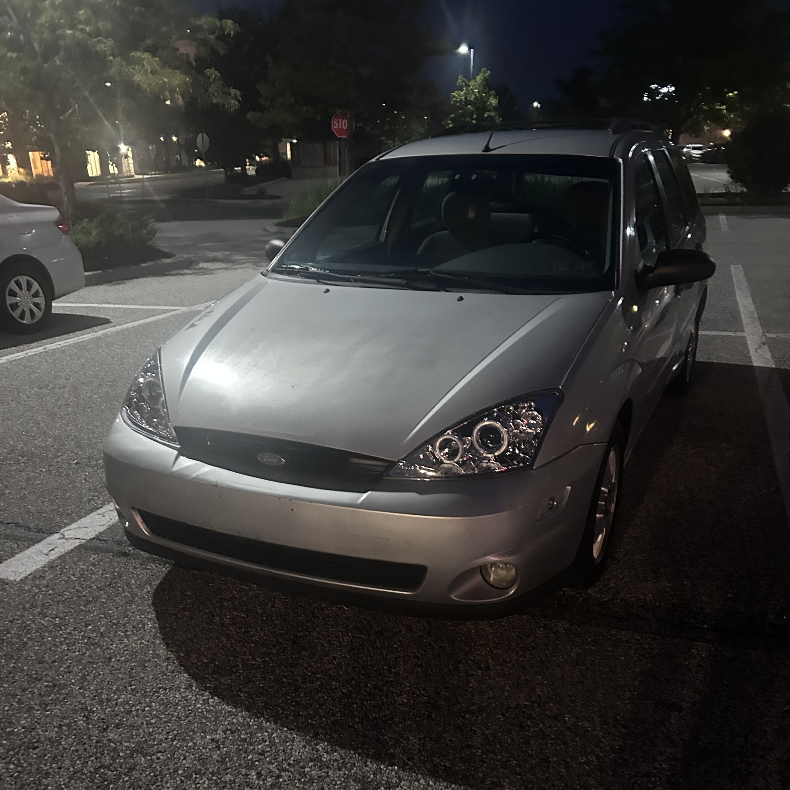
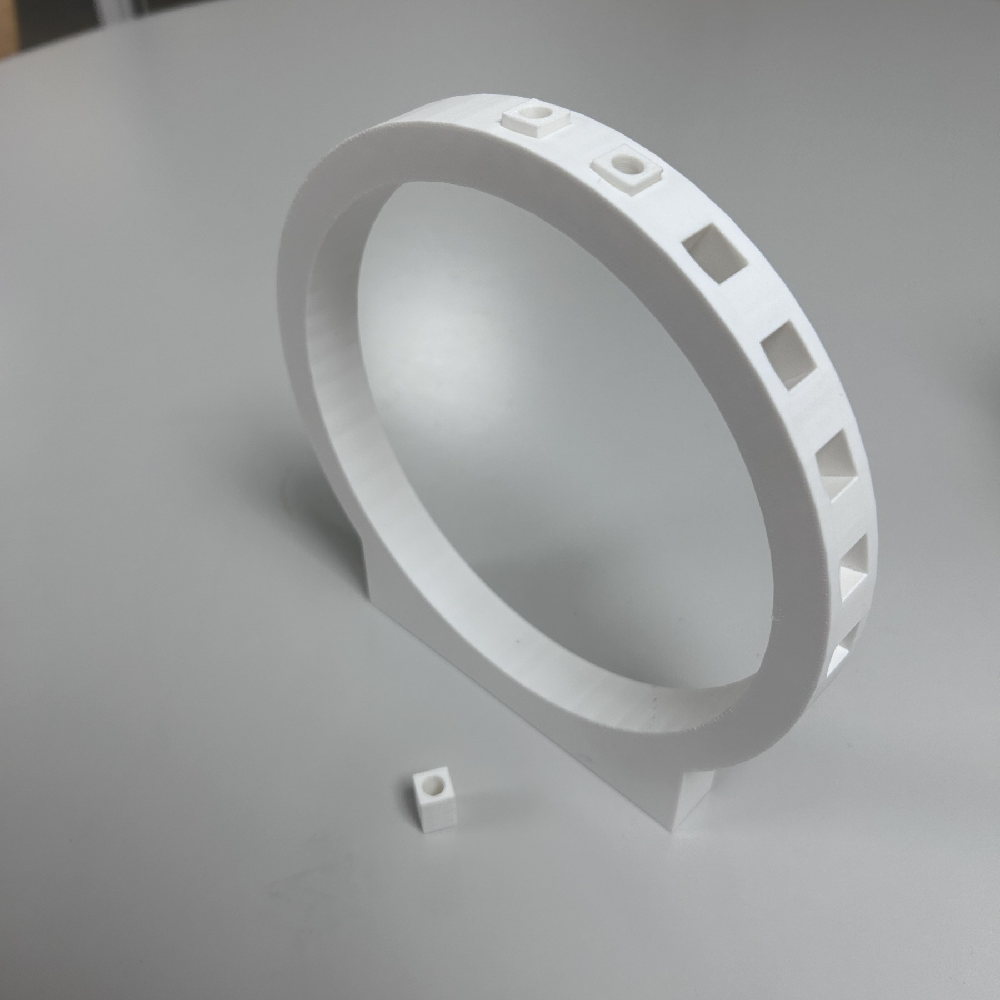
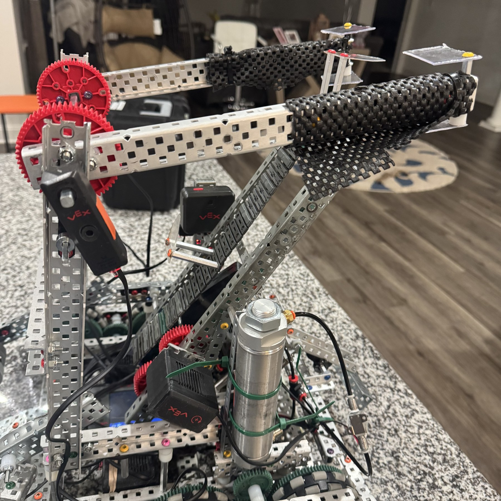
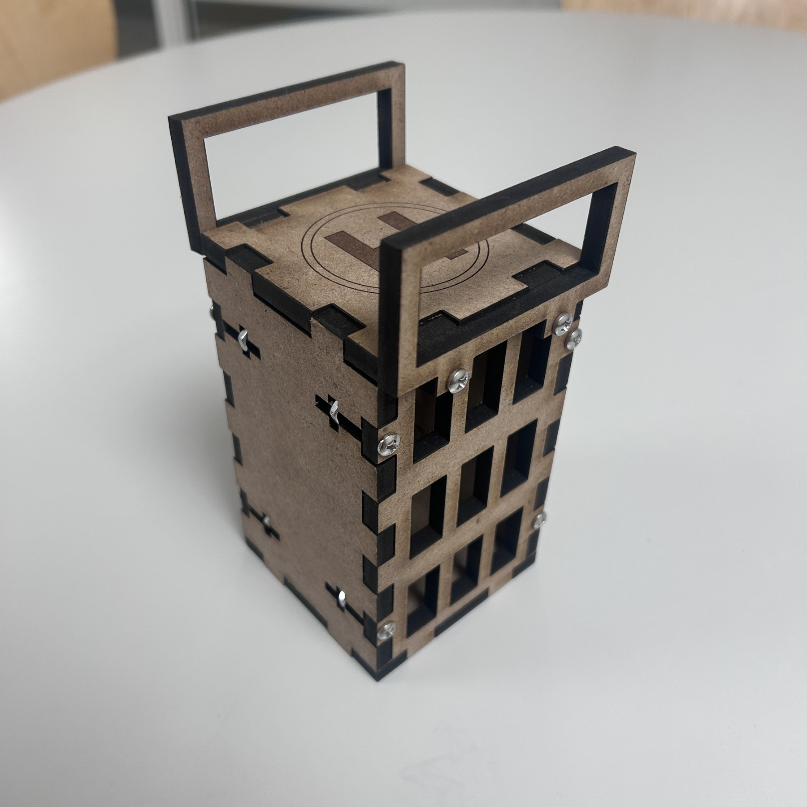
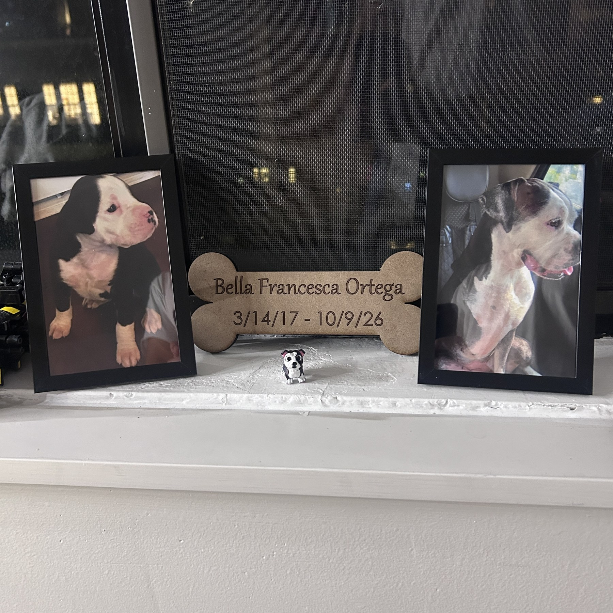

Automotive / Diagnostics
Ford Focus
A car I earned, a system I learned: timing-belt and water-pump work, plus tracing a vacuum leak to a ruptured diaphragm.
Explore projectI’m Timothy Ortega, a mechanical engineering student at Penn, drawn to the space where a sketch becomes a working mechanism.
Learning by taking things apart, asking better questions, and putting ideas to the test.
I’m a first-year student studying Mechanical Engineering and Applied Mechanics at the University of Pennsylvania.
My experience connects hands-on automotive work, robotics, CAD, aerospace structures, and programming. I’m curious about how individual parts work together—and how thoughtful design turns that understanding into something useful.
This portfolio brings together projects and areas I’m exploring, from Ford Focus maintenance and diagnosis to robotics, rocketry tools, and personal fabrication projects.
Mechanical Engineering and Applied Mechanics
First-year undergraduate · B.S.E. expected June 2030
The decisions, the hardware, and the learning behind each project. Open a story to go deeper.

A car I earned, a system I learned: timing-belt and water-pump work, plus tracing a vacuum leak to a ruptured diaphragm.
Explore project
A reusable jig and replaceable drill-contact insert for repeatable hole spacing in a fiberglass rocket airframe.
Explore project
Leading five engineers to integrate mechanisms, electronics, pneumatics, sensors, and C++ into a competition robot.
Explore projectSmaller builds, fabrication studies, and things made for a personal reason.

SolidWorks geometry brought to life with laser-cut acrylic, 3D-printed parts, and an off-the-shelf bearing.
Explore project
An assembly of laser-cut MDF, printed components, screws, and nuts built around intentional joint design.
Explore project
A laser-cut MDF keepsake designed to remember my dog Bella—a personal reason to make something carefully.
Explore projectAreas I’m interested in learning more about: the intersection of flight, autonomy, vehicle dynamics, and mechanical design.
CAD, fabrication, and programming tools I use to connect design ideas with working systems.
Selected academic, team, and independent experience.
First-year undergraduate
Studying Mechanical Engineering and Applied Mechanics, with interests in vehicles, robotics, and aerospace systems.
High Power Rocketry Team · Sept 2026–present
Designed, fabricated, and tested a reusable drill jig for precise, repeatable mounting-hole spacing in a fiberglass rocket airframe.
Team Captain · Sept 2022–June 2026
Led five engineers across mechanical design, electronics, and software. Built a six-ring stacking mechanism and programmed autonomous routines in C++.
Line Cook, Expo, To-Go Facilitator · Dec 2024–June 2026
Coordinated multiple orders, worked flat-top and fryer stations, and supported guests during high-volume service.
Oct 2023–Nov 2024
Prepared food and delivered customer service in a fast-paced, team-based kitchen environment.
Interested in my work or have a project to discuss? I’d welcome a conversation about engineering, design, and opportunities to keep learning.